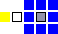
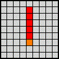
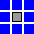
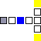

권
기술 범위가 다양하며, 적을 이동시키는 기술도 있다.| 명칭(K) | 명칭(J) | WM | SP | STAT | 위력 | 배율 | 비고 |
|---|---|---|---|---|---|---|---|
| 삼연격 | 三連激 | 1 | 8 | ATK, SPD | 18 | 110 | |
| 잔상권 | 残像拳 | 3 | 24 | ATK, SPD | 26 | 120 | |
| 사자왕파 | 獅子王波 | 6 | 56 | ATK, SPD | 28 | 110 |  |
| 아랑분쇄축 | 餓狼粉砕蹴 | 10 | 82 | ATK, SPD | 40 | 140 |  |
| 스페이스 승룡격 | スペース昇竜撃 | 15 | 124 | ATK, SPD | 66 | 170 |  |
| 마권 빅뱅 | 魔拳ビッグバン | 21 | 240 | ATK, SPD | 78 | 150 | 화염 속성 |
검
범용성으로 최고의 무기 기술, 주로 직선상의 적을 공격하는 기술이 많다.| 명칭(K) | 명칭(J) | WM | SP | STAT | 위력 | 배율 | 비고 |
|---|---|---|---|---|---|---|---|
| 일문자 슬래시 | 一文字スラッシュ | 1 | 10 | ATK | 10 | 110 | |
| 용권파이검 | 竜巻破裏剣 | 3 | 18 | ATK | 32 | 130 | 질풍 속성 |
| 월광일섬참 | 月光一閃斬 | 6 | 38 | ATK | 26 | 110 | |
| 비천무쌍참 | 飛天無双斬 | 10 | 82 | ATK | 36 | 120 | |
| 암흑검 X자 베기 | 暗黒剣Ｘの字斬り | 15 | 120 | ATK | 80 | 170 | |
| 대차원단 | 大次元断 | 21 | 260 | ATK | 80 | 160 |  별 속성 |
창
공격 범위가 자신의 주변을 공격하는 기술이 대부분. 추가로 착지 지점이 있어서 넓은 지형이 아니면 사용하기 쉽지 않다.| 명칭(K) | 명칭(J) | WM | SP | STAT | 위력 | 배율 | 비고 |
|---|---|---|---|---|---|---|---|
| 비뢰침 | 飛雷針 | 1 | 7 | ATK | 20 | 110 | |
| 질풍신뢰 | 疾風迅雷 | 3 | 15 | ATK | 36 | 120 | |
| 낙하성 | 落下星 | 6 | 45 | ATK | 34 | 120 | |
| 타뷸런스 | タービュレンス | 10 | 80 | ATK | 48 | 130 |  질풍 속성 |
| 진창신리 | 真槍神理 | 15 | 125 | ATK | 70 | 140 | |
| 마포유성군 | 魔砲流星群 | 21 | 250 | ATK | 94 | 160 | 화염 속성 |
활
범위 지정식 기술이 대부분. 총과 비교하면 사용하기 쉽다.| 명칭(K) | 명칭(J) | WM | SP | STAT | 위력 | 배율 | 비고 |
|---|---|---|---|---|---|---|---|
| 스플라인 애로우 | スプラインアロー | 1 | 8 | ATK, HIT | 24 | 110 |  수격 속성, 독(30%) |
| 라이덴 미사일 | ライデンミサイル | 3 | 22 | ATK, HIT | 26 | 120 |  사정4 사정4타락(30%) |
| 서드 스플릿 | サードスプリット | 6 | 36 | ATK, HIT | 40 | 140 |  수면(40%) |
| 질 레겐 | ジールレーゲン | 10 | 80 | ATK, HIT | 32 | 140 | 화염 속성, 마비(40%) |
| 도플갱어 | ドッペルゲンガー | 15 | 120 | ATK, HIT | 60 | 150 | 사정4 망각(40%) |
| 오메가 코멧 | オメガコメット | 21 | 260 | ATK, HIT | 82 | 160 | 사정4 수격 속성 |
총
범위가 모두 직선상의 적을 기준으로 하기 때문에 위치 선정이 중요하다.| 명칭(K) | 명칭(J) | WM | SP | STAT | 위력 | 배율 | 비고 |
|---|---|---|---|---|---|---|---|
| 삼연성사 | 三連星射 | 1 | 8 | HIT | 15 | 110 |  직선범위 3 직선범위 3SPD -20% |
| 토룡탄 | 土竜弾 | 3 | 16 | HIT | 28 | 120 | SPD -20% |
| 영거리 버스터 | 零距離バスター | 6 | 32 | HIT | 38 | 130 | 별 속성, SPD -20% |
| 리플렉트 레이 | リフレクトレイ | 10 | 78 | HIT | 46 | 140 | 직선범위 3 SPD -20% |
| 토텐크로이츠 | トーテンクロイツ | 15 | 138 | HIT | 68 | 150 | 직선범위 3 화염 속성, SPD -20% |
| 인페르노 | インフェルノ | 21 | 256 | HIT | 88 | 160 | 직선범위 5 화염 속성, SPD -20% |
도끼
모든 기술 범위가 1칸만 공격할 수 있다. 범위 공격이 없어서 육성하기 까다롭다.| 명칭(K) | 명칭(J) | WM | SP | STAT | 위력 | 배율 | 비고 |
|---|---|---|---|---|---|---|---|
| 암석 부수기 | 岩石くだき | 1 | 6 | ATK | 20 | 110 | DEF -10% |
| 대지 가르기 | 大地裂き | 3 | 14 | ATK | 40 | 120 | DEF -12% |
| 부메랑 액스 | ブーメランアクス | 6 | 32 | ATK | 60 | 130 | DEF -15% |
| 흩날리는 꽃 | 乱れ散り花 | 10 | 74 | ATK | 80 | 150 | DEF -18% |
| 그래비톤 플레어 | グラビトンフレア | 15 | 112 | ATK | 100 | 170 | DEF -20% |
| 플라즈마 승천격 | プラズマ昇天激 | 21 | 188 | ATK | 120 | 190 | 별 속성, DEF -25% |